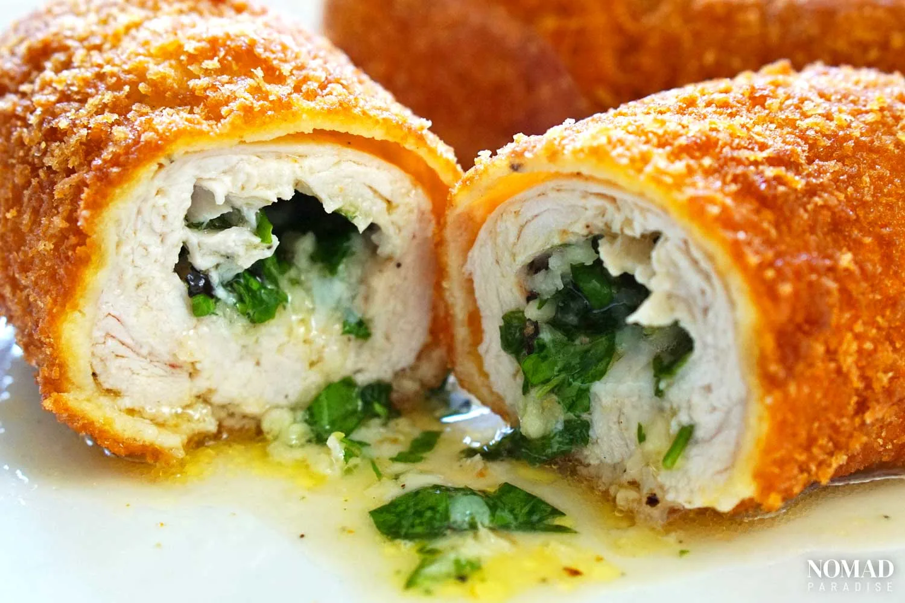

A dish of such epic proportions they named it after the capital city.
Ukrainian Chicken Kyiv is an absolute showstopper of a main dish that brings together several layers of different flavors and textures in one truly mind-blowing mouthful.
Chicken Kyiv is a classic dish in Ukrainian cuisine, consisting of chicken breast or fillet, pounded until flat, filled with butter and various herbs, and coated in flour, eggs, and breadcrumbs before being cooked, either by being baked in an oven or fried in a pan. While in the classical version, the chicken bone is retained, nowadays, the boneless version is more popular.
Crunchy, buttery, tender, and aromatic, all at the same time, Chicken Kyiv is arguably Ukraine's most well-traveled dish, and can be found in restaurants and supermarkets all over Europe and across the world.
However, as with any traditional dish, the purest, most delicious way to enjoy this mouthwatering classic is to make it from scratch at home! While the classical version of this dish involves cooking the chicken on the bone, we'll do the modern, boneless version of Chicken Kyiv.
To make 4 portions of our Chicken Kyiv recipe, you'll first need to assemble the following ingredients:
Chicken Kyiv truly is a dish for the senses. To watch those juices cascade out when you cut in is so satisfying, as you feel the crispiness of the breadcrumbs and the tenderness of the chicken. Its intense aroma lures you in with its boundless charm and moistens the lips. Then you bite in and are treated to crunch, tenderness, and oozing juiciness, one by one.
It might take a little time to prepare this layered dish, but at the end of it all, your hard work will very much pay off. Chicken Kyiv is a dish of incredible textural and flavor combinations, and marries so many wonderful ingredients and techniques all into one golden-crusted portion - utterly fabulous!